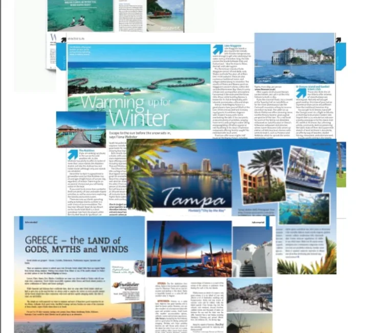
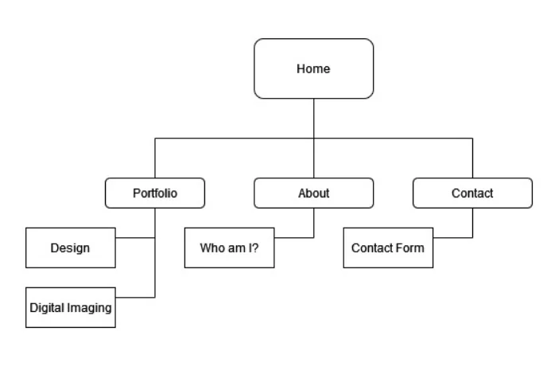
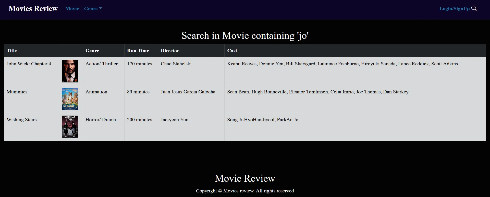
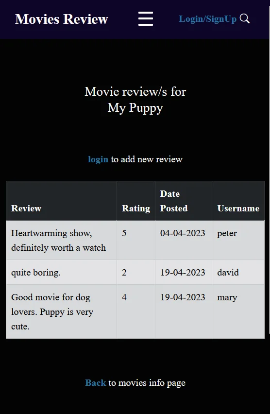
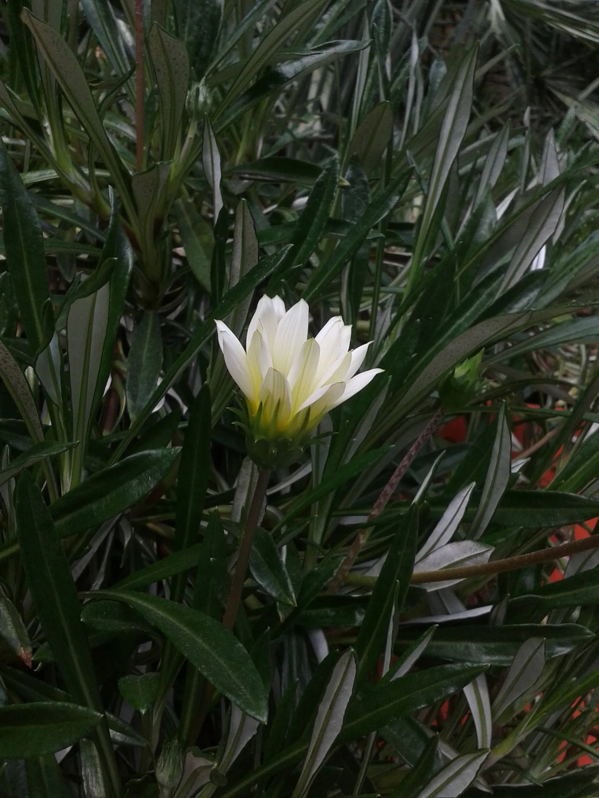
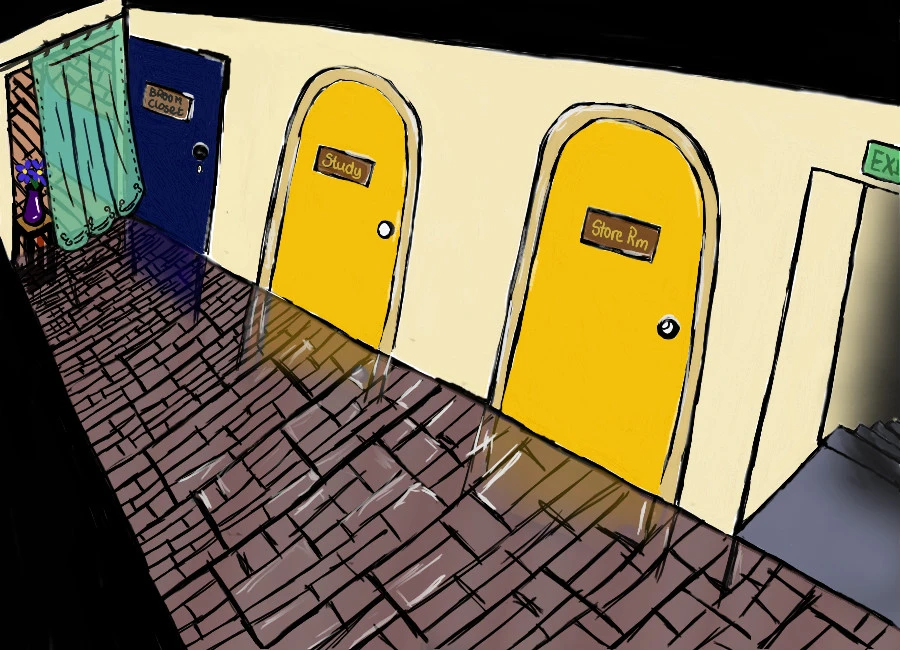
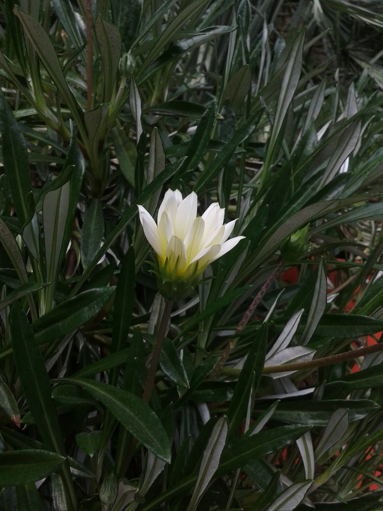
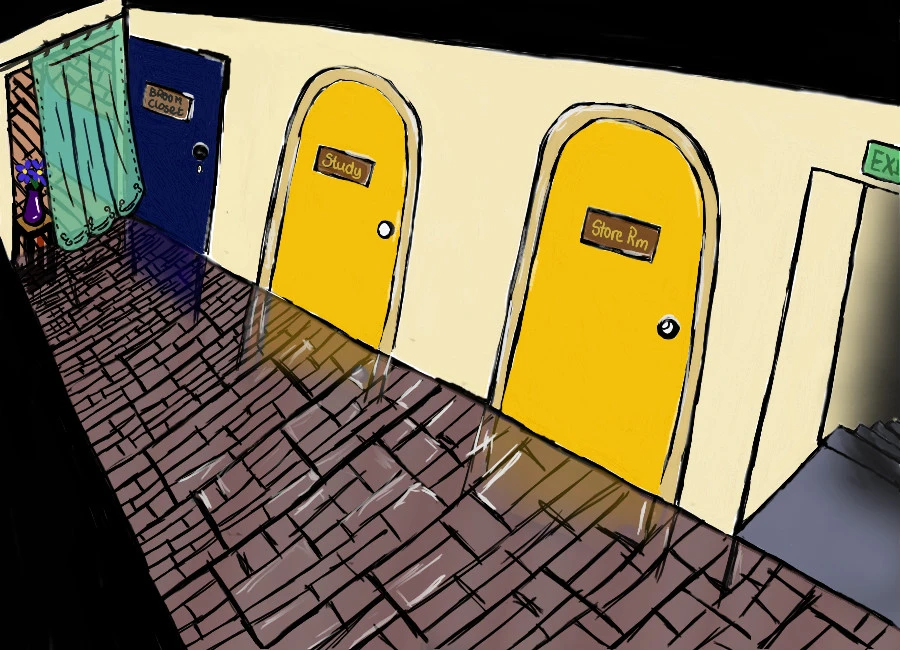

Diners - Website Prototype
GUCCI - Magazine Mockup

Auti-Learners - App Prototype

Slumberous Cat - Portfolio
Maldives Special - Magazine Mockup
Portfolio - Poster Design
Portfolio - Mobile Prototype
Scoot - App Prototype [Team]

Covid 19 Campaign - Poster Design

Movies Review - Website

CCA Registration - Java Programme[Team]
Movie List - Android App
Older works
Personal work [1]: one-off
×
Diners Commercial Webpage Prototype


Diners
"Healthy meals made easier" is the tagline for the placeholder brand call Diners, the image seen is what the customer's of this brand will see on the website when they first enter.
Color Scheme
The color scheme is split complementary which consist of blue and green to reflect the freshness the brand aims to provide, the orange and yellow gives touches of warmth, enthusiasm to the visual identity
Brand story
This placeholder brand was build around providing nourishing healthy options to the common public. Their menu ranges from bento boxes that consist of lean proteins, vibrant vegetables that are paired with rice or soba, to acai bowls and kombucha drinks. They source their ingredients from local and foreign farms.
Other details
The typography chosen appeals to their target audience which consist of mostly women therefore a cursive style can frame the brand as something more delicate and feminine.
The site map shows an overview of the contents of each page
The presentation mockup is a free resource by Zlatko_Plamenov / Freepik
×
'Gucci' Magazine Spread


'Gucci' Magazine
This is a mockup of a fashion magazine spread but it has no real relation to the actual brand GUCCI except for the look of the Gucci name.
Color Scheme
The color scheme makes use of grey scale and color to make the subject pop
Other details
The focus is on minimalistic design to give it a posh look. Lesser words more focus on the overall feeling of the design. The fake overlay of color lighting make it look like it is done in a photoshoot, the overlaid shadow adds to the realism of the surroundings.
During the research, the mood board is primarily focus on how other
photographers capture a certain look and what the end goal of the
magazine spread should carry in it's looks.
The presentation mockup is a free resource by rawpixel.com / Freepik
×
Auti-learners App Prototype
Auti-learners
Auti-learners is made for MINDS (Movement for the intellectually Disabled of Singapore) for kids having Autism Spectrum Disorder. The app has games base on matching, sorting and quizzes, with a tutorial beforehand that shows the user how to interact with the app. It uses auditory and haptic feedback to communicate errors/success to support their learning.
Color Scheme
The color scheme is compound color based on the base colors extracted from their webpage: #00A5E3(light mode), #34383D(dark mode), the colors shown are for the aforementioned light mode. The reason to implement dark mode is based on the consideration that the child might be sensitive to having too many colors or bright lights
Other details
MINDS center their brand around the belief of the inherent worth and potential of the individuals with intellectual disabilities and creating a inclusive society where individuals can be recognized, respected and supported with the opportunities to thrive. This app hopes work with kids with autism on their skill sets.
The site map shows an overview of the contents of each page
The presentation mockup is a free resource by Freepik
×
Slumberous Cat Portfolio
Final Color scheme:
TBC
Slumberous Cat
“Creative Design and Code”
The word cat and the word slumberous together makes basically a sleepy cat,
this is to convey my self identity of being adventurous and curious while simultaneously
poking fun at my constant fatigue spells that happen but I work with it.
The tagline tells whoever visits the portfolio site what I am working with: Design and Code.
Color Scheme
Initial Color scheme:The initial colors were generated by an adobe XD plugin call Dopely colors using their color and image function:
The initial design and color was chosen in the end as it was the most appealing to me and amongst the people (lecturers,friends and schoolmates) I had ask. Below were the many different designs and iterations before this one. (*Special thanks to Mr Jason for helping me overcome my design hurdles)
Final Color scheme:
TBC
Brand story
The brand centers around exploring the possible designs or code solutions with the client. As well as showing that I can independently do my own research and gather my own requirements to do the projects given. The brand would embrace the adventurous and flexible side of a cat.
Other details
Development Roadmap
- Base of webpage: home, about, portfolio, contact, including socials /
- Navigation Page indicators /
- Resume Download Link & Contact form functionality /
- Transition between pages /
- Portfolio page functionality /
- Portfolio Content
- Optimization tweaks based on Google's PageSpeed Insights
As of 16/9/2023: (*first entry is for mobile, second is for desktop)
Home:

About:

Portfolio: Not completed yet therefore not included in this pagespeed insights test, will include another test for portfolio once completed.
Contact:

×
'Maldives' Magazine Mockup

'Maldives' Special 2 page spread
This is a mockup of a travel magazine's 2 page spread but it has no real relation to any actual magazine, this was an exercise on layout with grids. This was created with a normal column grid.
Color Scheme
The color palette makes use of white beige and the colors present in the images provided to create it's overall look and feel. It also uses opacity for the shades of color to give it an overlaylook.
Other details
The design is build around the grid first followed by elementslike the overlay to create visual interest, the title logo placed on the image of the beach will attract the interest of readers the other images are place in a way that they represent windows of what it may be like to have a vacation at this location.

During the research, the mood board bring inspiration for the type of end
feeling for what the final magazine spread would be like.
The presentation mockup is a free resource by rawpixel.com / Freepik
×
'Portfolio' Poster Design
Portfolio Poster Design
This is a poster designed to promote a portfolio, this is based on a work I previously worked on as a possible portfolio de- sign. It is city themed with a bear mascot.
Color Scheme
The color scheme is compound and consist of blue and yellow as the night sky and city's colors. The grey and white, make up the roads and moon.
Other details
This view is a depiction of being inside the Y logo building that is in the webpage itself. The imagery suppose to hold the meaning of hope, going through changes and having abundance. It also holds a feeling of disconnectedness and a longing to see more of the world.
×
Ocean Themed Portfolio
Ocean Themed Mobile Portfolio
"Dive into Inspired Creation" Drives the connection with the ocean like in the logmark/combination logo. This also taps into exploration of inspiration. Conveying that I would like to invite potential clients to be involved in the creation process together exploring the possibilities.
Color Scheme
The color scheme is monochromatic, inspired by hues of the ocean to convey tranquility and meaning.
Brand story
The brand was centers around translating ideas into tangible works of art/programmes, harmonizing the richness of my imagination with the aspirations of prospective clients, hoping to encourage individuals to delve into the profound depths of their own souls, the brand embrace the limitless possibilities like those offered by the very idea of the an ocean.
Other details
The typography chosen gives a more personable feeling.

The site map shows an overview of the contents of each page
The presentation mockup is a free resource by rawpixel.com / Freepik
×
Scoot App Prototype(Team)
Scoot App Prototype[Team]
This was a team assignment, done in a team of 4 based of a real challenge which has already stopped accepting submission at the time that we were assign this. The following is the challenge in question:
Our team's focus was on this aspect of the challenge(*you can download the info kit at the link at the left of this page):
Our Team
Members: Yvonne, Chavonne, Shou Kang, Edry
Made out of 4 people, drawing inspiration from how most tech logos are
round our logo takes on a circular shape which can also
show how we might wish to be smooth in the processes
we uptake. the font chosen is sans serif as we wish to give
a formal impression to others.
The depictions of gear and
the uprising vertical lines can be seen as wires or
the mechanics in a system. Our tag line from code to reality, perfectly
describes us, as we as tech designers do bring the code’s
functionality, as what is seen as intangible to tangible results.
In this particular case although there are no code to be implemented, we have
crafted the prototype to fulfill the case study's goals.
Case study's Goal
- End Goal: higher in flight sales
- built in product ordering
- real time inventory management
- crew notification of seat's requiring attention
- purchase fulfillment(receiving order, preparing order,delivering order)
Color Scheme
The colors are mostly according to what was use within scoot itself, mainly the yellow and the black
Fonts Used
Survey Summary & Competitor Analysis
Although movies were the most chosen option but because due to the Scoot restricting to
provide free movies therefore we defaulted to try and improve the game page for their scoot hub.
Also as you can see from the survey summary: there were some who uses the existing scoothub and
thought that it was hard to navigate around it, therefore we actually make the design with this in mind,
with the use of hamburger menu and easy to read menu buttons, we hope to minimize as much issues regarding this as possible.
We also opted to design this as a native app as this will ensure that some information are retained or offline functionality(games) can still be performed,
in case the internet is down or that the passenger did not purchase the scoot's wifi access. To make the app more competitive with other airlines,
we make sure to target areas which were highlighted in the survey and the competitor's analysis.
The solution
- Has both the interface for cabin crew and customers
- Provide in-flight entertainment(for customers)
- Allow for instant feedback for stock level for items (for cabin crew)
- provides instant notifications of customer’s requests(for cabin crew)
- Gives more payment options*
- Provide ability to toggle between languages*
The presentation mockup is a free resource by rawpixel.com / Freepik
×
Covid 19 Poster
Covid 19 Campaign Poster
This work was done for covid 19 from a stance of a campaign poster. As there wasn't much limitations, nor a complete write up. Here it is. I choose to include this as it can be counted as one of the first of many works from when I return to school with design and tech in mind.
×
Movies Review Website
Movies Review Website
This was a PHP website that utilizes mysql, and is coded with the use of the NetBeans IDE and XAMPP control panel, I have not found a way to host this website live. So for now I will only be providing screentshots for this entry. The project spans a few months during the school term, looking back there were some things I could do better and I found issues as well.
Color Scheme
The color scheme is a blue shade to bring about a calm feeling.
The website
The website allows registered users to logged their reviews for the movies shown from the mysql database. Users can edit and delete reviews that they have written. Non registered users can view the webpage and it's contents but cannot add reviews. *the images shown below are taken on a wider screen different from the image on the display screen.
-
Home page
-
Login & SignUp
-
Logged In & Logged Out
-
Movies Page
-
Movie Info Page
-
Review Page
-
Search Function

-
Mobile friendly (Bootstrap 5)

-
Genre Drop Filter (& it's issues)
If you take note the second image(full genres) and the third image(search result) that shows, you can see that filtered result although correct, does not contain the full list of genres for the movie.
Before I end this post, the area which I felt could be done better was the full reload that happens for when the user login in order for the web page to detect the changes and reflect the users name and also change the login link to log out, at the time when I was doing this project I have yet to learn how or even if it is possible to load just certain parts of the website, so yes this is the part which I felt I could have done better.
The site map shows an overview of the contents of each page
The presentation mockup is a free resource by Zlatko_Plamenov / Freepik
×
CCA Registration System
CCA Registration System Java Programme (Team)
This project is suppose to emulate an agile project up to the end of sprint 1.
Project Task
Create a system on eclipse that allows 3 different type of users to perform functions relating to CCA activity registration.
We were provided a project description for this and have to ensure our system has CRUD
functionality except for update which was written in documentation as the PBI for sprint
2.
We are also expected to produce the relevant burndown chart, use case diagram, user
stories and documentation required in an agile project. Additionally we also expected
to implement Junit test cases and refactoring.
Skills/Tools Used
Java, Eclipse, Github for version control, project cloning and merging.
Features
The features we needed to implement in sprint 1 includes:-
(Role: Admin)
· Add a new user
· View all users
· Delete an existing user
-
(Role: Teacher)
· Add a new activity / Add a new time slot
· View all activities / View all time slots
· Delete an existing activity / Delete an existing time slot
· View all registrations / View all approval status
· Add a new approval status
· Delete an existing registration / Delete an existing approval status
· Add a new attendance
· View all attendance
· Delete an existing attendance
-
(Role: Student)
· Add a new registration
· View all activities / View all time slots
· View all registrations / View all approval status
· View all attendance
Other details
Lessons Learned
-
It was a good idea to establish the flow of the system before beginning
a group project, I implemented it through the code itself so that members
could see it the first thing they get into the main code body.
-
Discord pinning function works very well to keep our shared files for documentation
always available for any team member to access them when needed.
-
Some merge errors when working as a team are better fixed when in person as the error
consist of code being undone or overwritten by some of the undesired code, I believe
the difficulty was due to this being our first ever agile project.
-
Junit was tough as when we first implemented the main code, the code was built more
for user input and thus when doing up the junit we had to modify the code so that
it have a workaround that can work with both the user input and the junit itself.
-
Reading other members code and understanding it is very important in order for some
parts of the code to work alongside with other parts of the code
×
Movie List App

User Input, Takes in
image links(Enhancement)

Show Movie List, Display
Movie Image(Enhancement)

Filter based on rating

On selecting of any of the
movie list items you would
be brought to the edit page

Confirmation screen for deletion

Confirmation screen for cancellation

The presentation mockup is a free resource by rawpixel.com / Freepik
Movie List Android App
This was one of the notable projects that has CRUD in it. There was also quite abit of enhancement done to the project.
Project Task
The project spans across 2 lessons and has the following tasks:- create an app that can store data for movies
- add dialog box for deletion and cancellation
Skills/Tools Used
Java, Android Studio, Illustrator(creation of the splash screen icons), Android Arsenal-Material Dialog
Features
-
Record movie details and store them locally using SQLite
-
Retrieve and display image from the internet based on the link stored(Enhancement)
-
Allow user to filter out the movie stored in the list based on the Rating
-
Selecting the movie item will allow user to edit/delete the record for that item
Other details
Splash Screen(Enhancement)User Input, Takes in
image links(Enhancement)
Show Movie List, Display
Movie Image(Enhancement)
Filter based on rating
On selecting of any of the
movie list items you would
be brought to the edit page
Confirmation screen for deletion
Confirmation screen for cancellation
Lessons Learned
It was my first time dealing with dialog boxes but our lecturer mention
that we can try and implement custom material dialog boxes from android arsenal
if we wanted to challenge ourselves, so I give it a shot.
It was a small struggle
at first to implement it but I manage to overcome it by patiently studying the
documentation for the android arsenal dialog box. Another which I learn from
doing this project was doing the splash screen that has a simple animation.
The presentation mockup is a free resource by rawpixel.com / Freepik
×
Collection of Older work


My Backstory
This specific page holds what is left of my work from when I was studying in
Nitec in Interactive Media Design back in 2012-2013, I probably lost the
rest of the work due in part of my carelessness and how destructive(depress also) I was
feeling at the time, looking back, I would tell myself that the works I
produce were actually quite decent at the time and I should not have been
so easily influence by the words of my then lecturer, they(it was a specific
person but I am doing this to conceal) claim that polytechnic would in fact
be more tough but apparently not as much as they describe it will be. Had I
just push on I would already be finish with studying earlier but then I would
not say I regret what I have been through a 100%, because I did learn quite alot.
Enough of the story let's get with the showcase of the work and also a memorial to them.
Also cheers to past me for surviving till today
(*the works wouldn't have names to them as I lost all the files that originally holds or created them)
If you scrolled till the end here, might you be interested to see one more,
it was a photography portfolio site I created at the time as well, it contains
photographs that I took but the words are all filler text, just a warning most of the photos have depreciated in quality.
LINK
×
Personal work [1]





Introduction
Hey, so i thought might as well make something of a record of at least my personal works here, might not be much but here they are.
Photography
My casual dabble in photography.

Digital & Traditional Artwork
